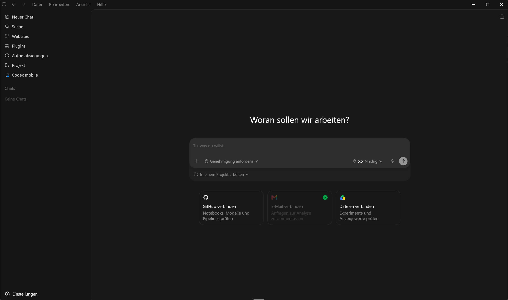

Ein erster Überblick: Was Codex kann, wie es sich von ChatGPT unterscheidet — und warum das für unsere Arbeit einen Unterschied macht.
Los geht's →Beide stecken voller KI — der Unterschied liegt darin, was sie damit tun: reden oder handeln.
Kurz gesagt: ChatGPT sagt euch, wie es geht — Codex macht es, unter eurer Kontrolle.
Codex gibt es in mehreren Varianten — je nachdem, wo und wie ihr arbeiten wollt:
Eigenes Programm zum Installieren — klickbar, übersichtlich, kein Vorwissen nötig.
Direkt im Browser über ChatGPT — nichts installieren, von überall erreichbar.
Per Befehl in der Kommandozeile — schnell und schlank für geübte Nutzer.
Direkt in der Programmier-Umgebung (z. B. VS Code) für Entwickler:innen.
Unsere Empfehlung: die Desktop-App — am komfortabelsten und der einfachste Einstieg.
https://chatgpt.com/de-DE/codex/
Fahre mit der Maus über die hervorgehobenen BegriffeGenau so: Bei Mouseover öffnet sich automatisch eine kurze Erklärung — Maus weg, schließt sie wieder. für eine kurze Erklärung.
Kurz: links wählen, in der Mitte tippen, unten Modus & Tempo einstellen — und absenden.
Drei Bausteine, mit denen Codex über das reine Schreiben hinaus an eure Werkzeuge andockt und Arbeit übernimmt:
Erweiterungen, die Codex mit euren Programmen verbinden. Beispiel Gmail: einmal verbunden, kann Codex eure E-Mails lesen, zusammenfassen oder einen Entwurf vorbereiten.
Weitere: GitHub, Google Drive, Kalender …
Wiederkehrende Abläufe, die Codex automatisch erledigt — ohne dass ihr jedes Mal fragt. Beispiel: jeden Montag die neuen E-Mails zusammenfassen.
Gut für Routine-Aufgaben nach festem Plan.
Der Arbeitsbereich auf eurem Rechner. Codex kennt nur, was im Projekt liegt — so bleibt alles übersichtlich und getrennt.
Pro Aufgabe ein eigenes Projekt = Ordnung.
Kurz: Plugins verbinden, Automatisierungen wiederholen, Projekte ordnen.
Alles direkt am Eingabefeld – ein neuer Chat, vier kleine Entscheidungen, bevor du den Auftrag abschickst:
Wichtig – der Ordner ist die Grenze:
Sobald ein Ordner geöffnet oder erstellt ist, arbeitet Codex nur in diesem Ordner. Es kennt auch nur das, was darin liegt – plus das, was über die Plugins angebunden ist. Alles außerhalb bleibt unberührt und unsichtbar.
Faustregel zum Start: Für mich genehmigen, Modell GPT-5.5, Denktiefe Mittel – und ein eigener Projekt-Ordner.
Du bekommst den Code als Text – kopieren, eine Datei anlegen, einfügen, speichern, im Browser öffnen. Alles von Hand.
Die fertige Datei liegt schon im Ordner – getestet und bereit. Kein Kopieren, kein Zusammenbauen. Du prüfst nur noch das Ergebnis.
Vom Vortrag bis zum kleinen Werkzeug – ein paar Ideen, die mit Codex in Minuten statt Stunden entstehen:
Genau wie diese hier – eine Datei, die im Browser läuft.
Kleine Helfer für den Alltag – ohne Programmierkenntnisse.
Excel/CSV → saubere Tabelle, Diagramm oder kleines Dashboard als HTML.
Produkttexte, Serienbriefe, Tabellen sortieren, umformatieren, zusammenfassen.
Schritt-für-Schritt-Seiten für Kolleg:innen – wie unsere Codex-Übersicht.
Faustregel: Wenn es eine Datei, eine Seite oder Fleißarbeit ist – Codex kann es übernehmen.
Diese Anleitung steht online – einfach den Link öffnen und Schritt für Schritt durchgehen, wann immer du magst.
ki-textil-mode.de/codex-anleitungtextil+mode · Einleitung Codex · 25.06.2026